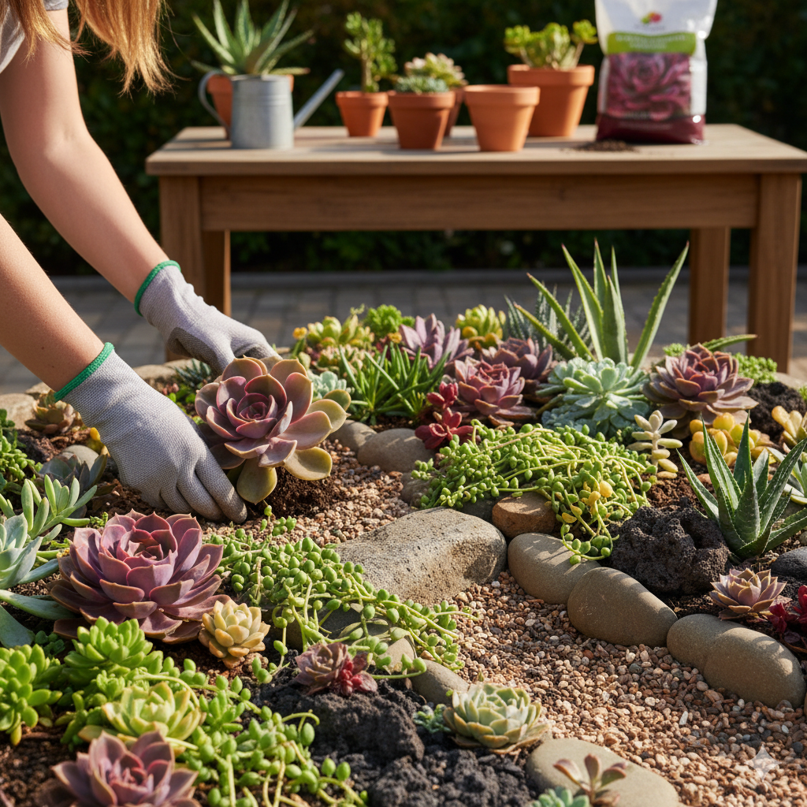
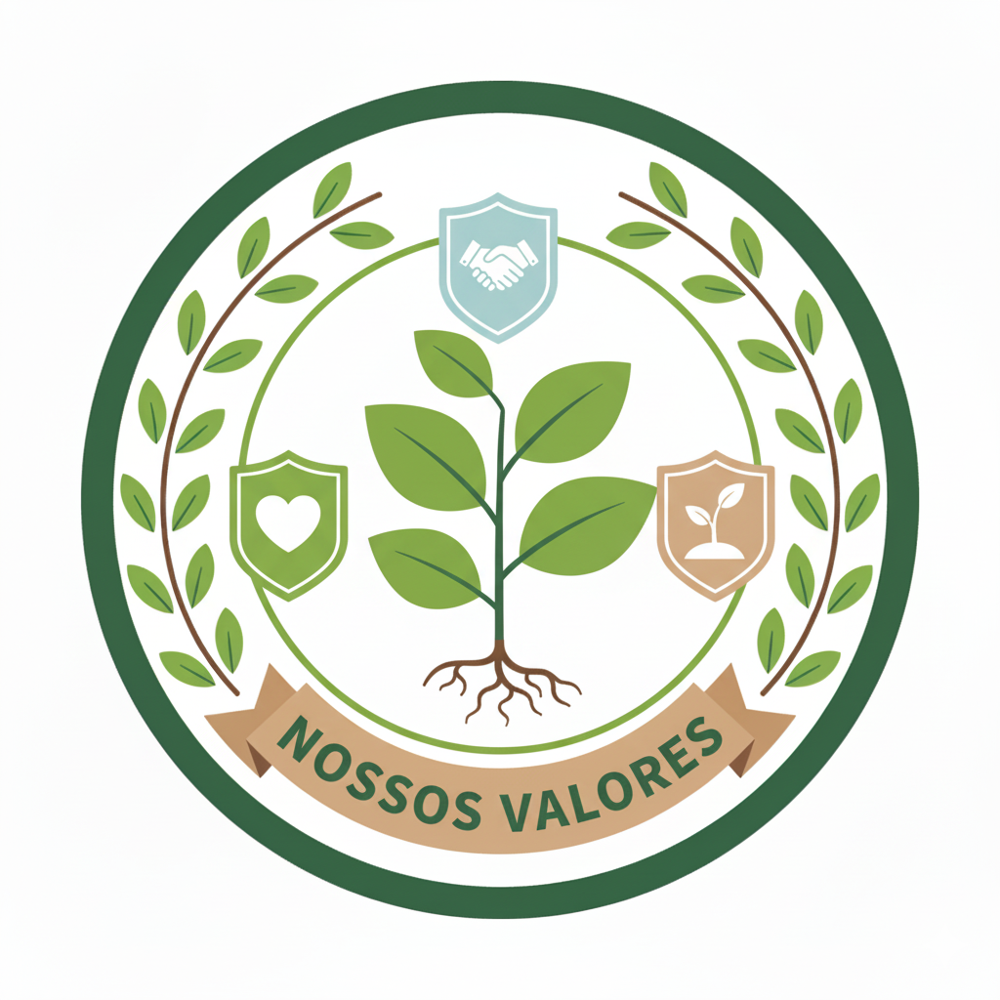
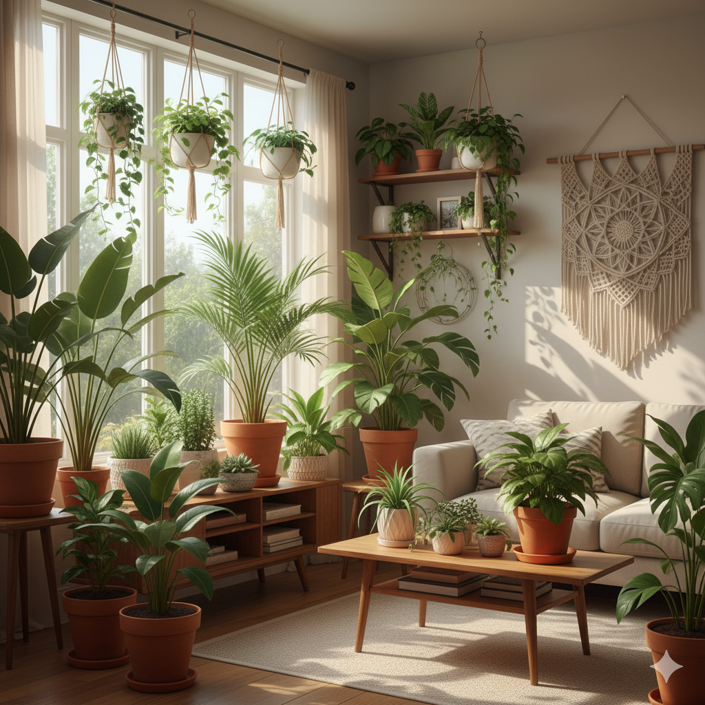

Bem-vindo a Plantas Yo
Somos seu novo destino favorito para encontrar a alma verde do seu ambiente.
Na Plantas Yo, acreditamos que ter plantas dentro de casa é mais do que uma tendência:
é um estilo de vida que nutre a alma, decora com elegância e transforma qualquer espaço
em um refúgio de bem-estar.

Quem somos ?
Um espaço dedicado a conectar você com a beleza e os benefícios da natureza.
Acreditamos que ter plantas em casa ou no escritório transforma ambientes,.
melhora o bem-estar e nos reconecta com o verde
Conectar pessoas à natureza,
simplificando a jornada de cuidado
e cultivo de plantas por meio
de informações acessíveis.
Ser a plataforma online mais confiável
no Brasil para entusiastas e iniciantes
em jardinagem, reconhecida pela
excelência do conteúdo e pelo compromisso.

Paixão por Plantas: Cultivamos o amor
pela natureza e valorizamos a jornada
de cada cliente, oferecendo suporte genuíno
e inspirando a alegria de ter plantas.
Um pouco sobre Nós
A PlantasYo nasceu de uma simples observação: a paz e a alegria que uma única planta de
interior pode trazer para um dia agitado.
A inspiração para criar a PlantasYo veio da vontade de compartilhar não apenas o
conhecimento, mas a transformação que o cultivo de plantas proporciona. Percebemos que
muitas pessoas amavam a ideia de ter verde em casa, mas se sentiam intimidadas ou
desinformadas.
Nossa missão se tornou, então, quebrar essa barreira. Queremos provar que você não precisa
ter um "dedo verde" para ter sucesso. Acreditamos que, ao fornecer guias claros, dicas
acessíveis e uma comunidade de apoio, podemos inspirar você a iniciar sua própria jornada
botânica.
Seja você um iniciante que nunca teve uma planta ou um entusiasta experiente, a PlantasYo é o
seu refúgio verde.
Encontre a Planta Perfeita !
Escolher a planta certa é o segredo para ter um cantinho verde que prospera e não apenas
sobrevive. Na PlantasYo, nós sabemos que cada espaço tem suas próprias necessidades de luz,
umidade e espaço. Por isso, selecionamos as espécies ideais para transformar qualquer área da
sua casa ou escritório em um verdadeiro oásis!
Na PlantasYo, o seu sucesso é a nossa missão.
Antes de escolher, observe bem seu ambiente e decida qual planta te fará mais feliz.
Precisa de ajuda para identificar o nível de luz do seu espaço?
Explore nossos guias e comece a cultivar seu verde hoje mesmo!

O que nosso cliente diz !
O feedback dos clientes é a seiva vital para o crescimento da PlantasYo.
Mais do que meros comentários, as avaliações e opiniões dos
nossos clientes são a bússola que orienta todas as nossas decisões.
"Fiquei impressionada com a qualidade das plantas
da PlantasYo!Comprei uma Jiboia e ela chegou impecável,
super saudável e bem embalada.
O atendimento também é nota 10."

"Sempre tive medo de comprar plantas online por causa do
transporte,mas a PlantasYo superou todas as minhas expectativas!
A embalagem é de outro nível, tudo muito
seguro e bem preso."
"Achei a Begônia que eu tanto procurava! A variedade de espécies
raras que a PlantasYo oferece é incrível.Além disso,
as dicas de cuidado que vieram junto com a planta
me ajudaram muito a mantê-la feliz.Com certeza vou comprar mais."

PlantasYo@gmail.com